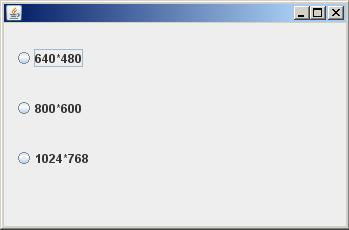

- Swing - JRadioButton |
Otro control visual muy común es el JRadioButton que normalmente se muestran un conjunto de JRadioButton y permiten la selección de solo uno de ellos. Se los debe agrupar para que actúen en conjunto, es decir cuando se selecciona uno automáticamente se deben deseleccionar los otros.
Confeccionar un programa que muestre 3 objetos de la clase JRadioButton que permitan configurar el ancho y alto del JFrame.

import javax.swing.*;
import javax.swing.event.*;
public class Formulario extends JFrame implements ChangeListener{
private JRadioButton radio1,radio2,radio3;
private ButtonGroup bg;
public Formulario() {
setLayout(null);
bg=new ButtonGroup();
radio1=new JRadioButton("640*480");
radio1.setBounds(10,20,100,30);
radio1.addChangeListener(this);
add(radio1);
bg.add(radio1);
radio2=new JRadioButton("800*600");
radio2.setBounds(10,70,100,30);
radio2.addChangeListener(this);
add(radio2);
bg.add(radio2);
radio3=new JRadioButton("1024*768");
radio3.setBounds(10,120,100,30);
radio3.addChangeListener(this);
add(radio3);
bg.add(radio3);
}
public void stateChanged(ChangeEvent e) {
if (radio1.isSelected()) {
setSize(640,480);
}
if (radio2.isSelected()) {
setSize(800,600);
}
if (radio3.isSelected()) {
setSize(1024,768);
}
}
public static void main(String[] ar) {
Formulario formulario1=new Formulario();
formulario1.setBounds(0,0,350,230);
formulario1.setVisible(true);
}
}
Importamos los dos paquetes donde están definidas las clases e interfaces para la captura de eventos:
import javax.swing.*; import javax.swing.event.*;
Heredamos de la clase JFrame e implementamos la interface ChangeListener para capturar el cambio de selección de objeto de tipo JRadioButton:
public class Formulario extends JFrame implements ChangeListener{
Definimos tres objetos de la clase JRadioButton y uno de tipo ButtonGroup:
private JRadioButton radio1,radio2,radio3;
private ButtonGroup bg;
En el constructor creamos primero el objeto de la clase ButtonGroup:
bg=new ButtonGroup();
Creamos seguidamente el objeto de la clase JRadioButton, definimos su ubicación, llamamos al método addChangeListener para informar que objeto capturará el evento y finalmente añadimos el objeto JRadioButton al JFrame y al ButtonGroup:
radio1=new JRadioButton("640*480");
radio1.setBounds(10,20,100,30);
radio1.addChangeListener(this);
add(radio1);
bg.add(radio1);
Exactamente hacemos lo mismo con los otros dos JRadioButton:
radio2=new JRadioButton("800*600");
radio2.setBounds(10,70,100,30);
radio2.addChangeListener(this);
add(radio2);
bg.add(radio2);
radio3=new JRadioButton("1024*768");
radio3.setBounds(10,120,100,30);
radio3.addChangeListener(this);
add(radio3);
bg.add(radio3);
En el método stateChanged verificamos cual de los tres JRadioButton está seleccionado y procedemos a redimensionar el JFrame:
public void stateChanged(ChangeEvent e) {
if (radio1.isSelected()) {
setSize(640,480);
}
if (radio2.isSelected()) {
setSize(800,600);
}
if (radio3.isSelected()) {
setSize(1024,768);
}
}
import javax.swing.*;
import java.awt.event.*;
public class Formulario extends JFrame implements ActionListener{
private JTextField tf1,tf2;
private ButtonGroup bg;
private JRadioButton radio1,radio2;
private JButton boton1;
public Formulario() {
setLayout(null);
tf1=new JTextField();
tf1.setBounds(10,10,100,30);
add(tf1);
tf2=new JTextField();
tf2.setBounds(10,60,100,30);
add(tf2);
bg=new ButtonGroup();
radio1=new JRadioButton("Sumar");
radio1.setBounds(10,110,100,30);
bg.add(radio1);
add(radio1);
radio2=new JRadioButton("Restar");
radio2.setBounds(10,140,100,30);
bg.add(radio2);
add(radio2);
boton1=new JButton("Operar");
boton1.setBounds(10,180,100,30);
boton1.addActionListener(this);
add(boton1);
}
public void actionPerformed(ActionEvent e) {
if (e.getSource()==boton1) {
int v1=Integer.parseInt(tf1.getText());
int v2=Integer.parseInt(tf2.getText());
int resultado=0;
if (radio1.isSelected()) {
resultado=v1+v2;
}
if (radio2.isSelected()) {
resultado=v1-v2;
}
setTitle(String.valueOf(resultado));
}
}
public static void main(String[] ar) {
Formulario formulario1=new Formulario();
formulario1.setBounds(0,0,350,250);
formulario1.setVisible(true);
}
}